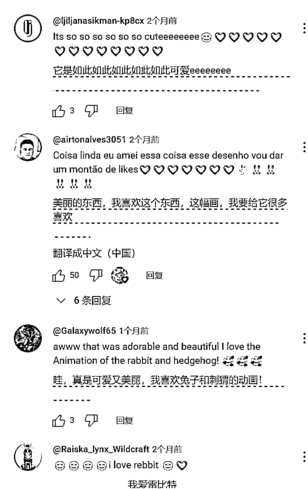
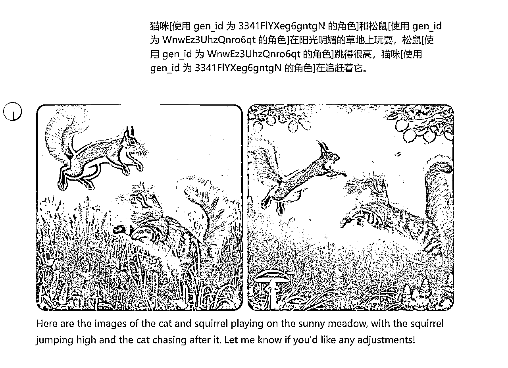

来源：https://ktnwm6ohjn.feishu.cn/docx/NKaOddxiuoMFTOxEsB7cEAHqnKe
大家好，我是土豆君，一个程序员，喜欢研究代码提效。我在7-9月份的时候尝试复刻过AI橘猫类shorts视频，并用代码实现了批量产出AI视频，正好龙珠悬赏来了，把这块经验整理分享一下。
https://www.youtube.com/@RabbitsQuest
选择分析的理由，我是9月初看到这个账号的，当时起号才3个月，每条视频都是几百w的播放，故事模式又特别简单，所以立刻做了复刻尝试。
socialblade 能看到的一个预估收入，其实很不准确，但是只要视频是近三个月能出爆款的，就一定值得尝试。
这个账号视频都是1分钟的shorts，形式是图片PPT默剧讲述一个小兔子克服困难帮助其他动物的故事。

从评论能发现观众基本都是偏小孩子（还可以点击头像看他们的频道进一步分析），小孩子喜欢看动物故事。萌萌的宠物形象是吸引的亮点，加上还有十分正确积极向上的价值观。
故事模板化，开头某个动物落难，中间相遇一起吃饭玩耍，高潮克服困难，结尾歌颂友情。
视频复刻我是在9月10号尝试的，当时选的就是这个视频。
https://www.youtube.com/shorts/FSagPjcmFFg
我的思路是用GPT创作故事然后用自带的Dall-E3生成每个分镜图，然后用剪映拼接一下。能够用代码自动化的部分就尽量采用自动化，这样方便批量。
GPT创作故事：用提示词让GPT写出了五个故事，然后我选择了其中的一个
写五个儿童绘本故事，可爱的小猫咪为主角去帮助其他物种动物故事，首先因为动物落难而相遇，获救后描述他们一起生活的一面（回家一起吃饭、睡觉等），接着为了故事高潮需要设计遇到一些自然界的危险（包括自然灾害、遇到天敌等），便于突出猫咪为了友谊的勇敢精神，最后结尾表现出两个生命之间的友情。 注意： 动物落难要尽可能的能通过画面表现出来的方式描述，而不是通过气氛、声音这些来描述，要一看画面就能明白。 友情可以通过两个生命贴在一起来表现 语言描述一定要容易用画面表现，可以尽可能夸张一些 故事剧情容易让小孩理解并为友情而感动
GPT对话截图
我敲定了故事2，让GPT帮我生成25个场景。
故事 2: 小猫咪帮助小松鼠 根据这个故事2生成25张的画面描述分镜图的的Dall-E中文提示词（我会用Dall-E的提示词生成画面），可以更改剧情，方便用画面描述，可以尽可能夸张一些
生成的这25个场景画面后面直接用来生成图片。
先说下画图我使用的是Dalle-E3，为什么呢？其实MJ、SD我都有测试过，但是Dalle-E3 的语义理解能力是最强的，其他的画图的工具完全比不上，它不需要你去单独写提示词，你只要把你想要画的内容告诉它，就能直接画出来。
这也是为什么我前面要生成25张分镜图，就是为了直接把脚本转为AI图片。
Dalle-E3，登录网页版的ChatGPT，在 探索GPTs 里面找到 Dall-E3.
也可以直接复制粘贴这个链接：https://chatgpt.com/g/g-2fkFE8rbu-dall-e
怎么解决角色一致性？
其实我原来也遇到这个问题很头疼，后面看到卡兹克的文章有一篇说过了，OpenAI自带的绘画工具 DALL-E3 图片其实都有个 gen_id，利用这个 gen_id 可以控制这个角色一致性。
但是实际上在生成故事分镜的时候，gen_id也不是一直管用，有时候会失效，关键还是要保证角色外观尽量使用不同的颜色。比如两只猫的故事，就分别使用橘猫和狸花猫，这样就便于区分角色。
因此，角色一致性我的办法是：优先选择使用不同角色的外观 + gen_id 辅助。
但是需要注意，这个 gen_id 只在一个聊天窗口中有效，不能跨窗口使用。而且，如果使用 Dall-E3 API 来绘图也是没有办法使用 gen_id 来控制角色一致性的，因为每次API的对话就是一次性数据。所以我没有采取写代码调用API的方式来生图，而是直接用的网页版。
gen_id的用法还可以在GPT中尝试使用这个提示词：
从现在开始，你的核心目标就是保持角色一致性。必须使用与上一张图像相同的提示和gen_id来制作相同角色的新图像，以保证人物一致，且能适配更多的表情、动态、服装与场景。做的好的话我给你1000美元小费。明白的话请回复明白。
提示词复制👉 https://gitee.com/tudoujunha/rpa-gpt/blob/master/prompt_genid.txt
当然，像当前的这个场景，两个主体人物都是不同的动物差异较大，如果一致性要求没那么高，确实就可以直接用 国内中转的 DALL-E3 API 生图了。
后面当我想要复用这个角色的时候，直接告诉他使用这个 gen_id 就行了。
我这里使用的RPA是使用 Python playwright 库的方式，当然你也可以用影刀实现。
为了方便使用python脚本调用GPT网页直接输入提示词自动化生成，我需要对分镜进行处理。
我先是使用 Notepad++ 这类文本处理工具，把主体对象直接全部替换。
猫咪 替换为 猫咪[使用 gen_id 为 3341FlYXeg6gntgN 的角色]
松鼠 替换为 松鼠[使用 gen_id 为 WnwEz3UhzQnro6qt 的角色]
然后我就用 Claude3.5 写了个类似RPA的Python脚本，自动检测发送按钮是否能够点击，自动发送给 Dalle-E3 就可以了。
为了使Dall-E3 生成的画风是一致的，我添加了一个--prompt_style提示词前后缀的功能。前后缀的功能在CONFIG这里先写好就行了。
其他几个参数是中断后可以从第几行的提示词开始生成，或者重新生成某些画面，就不重要。
# 运行命令 python .\cat.txt #不需要添加提示词前后缀 python .\gpt_auto\input\cat.txt --prompt_style photography # 补充一个预设后缀
大部分情况生成的效果基本还可以，当然也会有一些效果不好、画风突变的画面，重新抽卡就好。

把图片都导入到剪映，配上自动放大的效果，就可以了。（为了尽量还原，还需要加上一些音效、特效的画面效果）这些只要做好一次，下次直接找到剪映草稿源图片的位置，替换源图片后再打开剪映就可以实现一键复用剪辑效果提高效率。
而BGM我是用手机版的Youtube自带的语音识别，直接搜索对标视频的音乐，就可以找到源BGM，用工具下载下来就行了。一般只需要下载一个视频，在这个网站下就行了，基本支持所有的自媒体：https://tiqu.cc/
对标的视频：https://www.youtube.com/shorts/FSagPjcmFFg
对标的视频是这个，不过因为是尝试的原创整个流程，而不是直接重绘图片，所以跟对标的视频只有故事相似，其他都不一样，而且我也没有加入一些声音去精细化打磨。
当时跑了下，数据感觉一般，视频创作有很大的提升空间，也需要打磨故事脚本和剪辑特效。现在的话，还可以引入AI视频。
我没有做到一键生成视频，但是可以拆分多个步骤，每个步骤批量产出。故事分镜创作可以用GPT生成几百个故事，AI生图我分享了 RPA自动化生图方案，也有API调用的方式，所以也是可以批量产出的。
剪辑可能麻烦一点，但我分享了一个提效的方法，固定一个模板替换图片可以大大加快剪辑的效率，基本上批量的问题就解决了。
如果需要图生视频，我最近其实还做了个指纹浏览器的海螺的RPA工作流，适合批量多账号跑视频，这块可以下次分享下~(帖子已经写好啦👉https://t.zsxq.com/7kM5x)
我在10月17号发过一条风向标，后面中标了。
https://wx.zsxq.com/group/1824528822/topic/1525442481188482
就是这个频道，7月23日发布第一个视频，同样是AI动物故事，先做的 shorts 然后转长视频开通YPP变现。shorts更容易涨粉，而用长视频积累视频时长开通YPP会更简单些。
下面这个频道8月21日才注册的，还是PPT讲故事的形式没有生成AI视频，已经10.9w粉了。
https://www.youtube.com/@MeowStory1234
2024年7月23日注册的，AI视频生成的猫猫短片故事
https://www.youtube.com/@CatsWonderland289
我在9月份尝试复刻这个视频发了几条，数据比较一般，后面就没坚持下来继续打磨。现在AI超级风向标让我重拾了信心，又在尝试起了AI视频，其实和原来复刻视频的思路都差不多，AI视频同样需要先生图然后拼接起来。
视频制作本身不难，难的是如何打磨出爆款，然后通过代码进行批量复制迭代。目前计划是先尝试1-3个账号跑一段时间看看效果，如果几个账号能够开通YPP，就可以批量复制更多号放大。
需要运行pip install playwright 安装 playwright 库。
如果有很多友友不会用的话，后面考虑做个界面出来。
代码我提交到了仓库，可以从这里下载：
https://gitee.com/tudoujunha/rpa-gpt/blob/master/dalle3_rpa.py
帖子提到的提示词👉 https://gitee.com/tudoujunha/rpa-gpt/blob/master/prompt_genid.txt
复制一个桌面的 Edge / Chrome 浏览器快捷方式，然后右键复制的 Edge / Chrome 浏览器，在目标的末尾添加
--remote-debugging-port=9222 ，注意开头有个空格。
# 在快捷方式的目标末尾添加 --remote-debugging-port=9222 # 完整的目标路径： "C:\Program Files (x86)\Microsoft\Edge\Application\msedge.exe" --remote-debugging-port=9222
然后保存这个浏览器快捷方式，双击打开，访问这个网址：
http://localhost:9222/json/version
如果显示如下类似信息，说明浏览器的调试端口成功打开了，这个时候就可以运行python代码自动运行浏览器了。
CONFIG 部分配置的 browser_ws_endpoint 就是浏览器的调试端口信息。
min_delay 和 max_delay 表示每次发送图片的等待时间，25秒-35秒，可以自己设置。

其实关于AI生成图片、图片生成视频，我也用 Claude 3.5 + Cursor 写过不少脚本代码，只是没找到一个合适的项目来结合做分享，之后看看有机会再拿出来分享下~